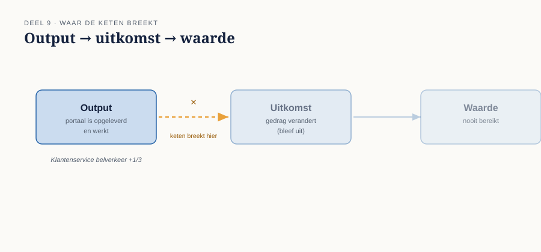
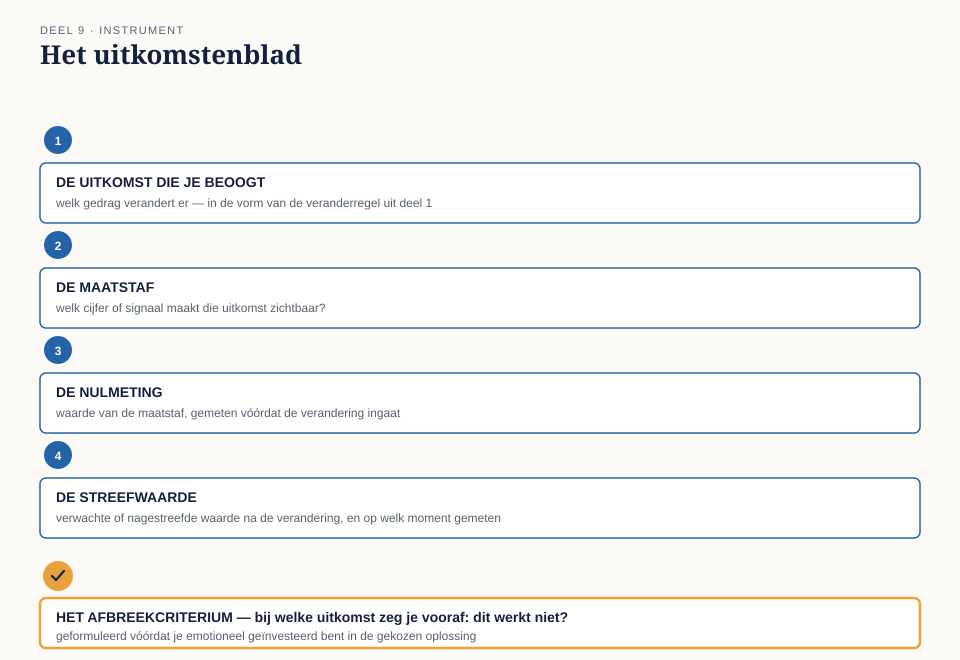

Deel 9 — Waarde en context: uitkomsten, KPI’s, beperkingen, standaarden
Slidedeck · Ductus-cursus Business-analyse · niveau 1 · deel 9 van 30 · 24 slides
Slide 1 — Titel
Business-analyse — deel 9 Waarde en context: uitkomsten, KPI’s, beperkingen, standaarden
Slide 2 — Terugblik
Verandering, behoefte, belanghebbende, oplossing: compleet.
De laatste twee kernconcepten: waarde en context.
Slide 3 — Drie maanden te laat
“We hielden altijd al bij hoeveel er belden.”
“Maar niemand had gezegd: als dit cijfer boven de zoveel komt, is er iets mis. Het was een beetje meer druk, een beetje meer druk — tot iemand na een kwartaal de grafiek erbij pakte.”
Slide 4 — Waar we het over gaan hebben
- Output, uitkomst, waarde
- De nulmeting
- Context: beperkingen, standaarden, aannames
- Het uitkomstenblad · bevinding B7 sluiten
Slide 5 — Output
Wat wordt opgeleverd. Aanwijsbaar op de dag van oplevering.
Het portaal zelf.
Slide 6 — Uitkomst
Het gedrag dat daadwerkelijk verandert.
Doen mensen iets anders?
Slide 7 — Waarde
Wat die verandering uiteindelijk oplevert — voor een belanghebbende.
Volgt op uitkomst, niet op output.
Slide 8 —

Output → uitkomst → waarde WGP 2.0: de keten breekt af na de eerste schakel
Slide 9 — Op tijd, binnen budget, niets veranderd
Output: perfect. Uitkomst: nagenoeg afwezig. Waarde: nooit gerealiseerd.
Slide 10 — Potentieel versus gerealiseerd
Vóór de verandering: een inschatting. Ná de verandering, gemeten: een feit.
Zonder meting blijft elke waardebewering een belofte.
Slide 11 — [Opdracht 1]
Output, uitkomst, of waarde? Vijf uitspraken.
Slide 12 — De nulmeting
Meten vóórdat je iets verandert.
Zonder nulmeting: geen manier om vast te stellen of er iets is verbeterd.
Slide 13 — Drie eisen
Dezelfde maatstaf, twee keer gemeten Representatief voor de doelgroep Vastgelegd vóórdat het resultaat bekend is
Slide 14 — [Opdracht 2]
Een grafiek in cijfers. Wanneer was het signaal afgegaan met een vooraf afgesproken drempel?
Slide 15 — Context: drie soorten grenzen
Beperkingen — wat kan niet, ongeacht wenselijkheid Standaarden — welke regels zijn leidend Aannames — wat wordt verondersteld, ongeverifieerd
Slide 16 — De gevaarlijkste van de drie
Een aanname vermomt zich makkelijk als een feit.
“Werkgevers hebben allemaal internettoegang” — totdat iemand het narekent.
Slide 17 — [Opdracht 3]
Beperking, standaard, of aanname? Vijf elementen.
Slide 18 — De werkvorm van dit deel
Het uitkomstenblad
Vooraf vastleggen waaraan je succes — én falen — herkent.
Slide 19 — Het blad
Uitkomst · Maatstaf · Nulmeting · Streefwaarde · Context
Slide 20 — Het veld dat het verschil maakt
Het afbreekcriterium
Bij welke uitkomst zeg je, vooraf afgesproken: dit werkt niet?
Vóórdat je emotioneel geïnvesteerd bent in de verdediging.
Slide 21 —

Het uitkomstenblad — met het afbreekcriterium als afsluitend veld
Slide 22 — Waarom dit B7 rechtzet
Geen afbreekcriterium → geen moment waarop een stijgend cijfer een onmiskenbaar signaal wordt.
Alleen “een beetje meer druk”, tot het te laat is.
Slide 23 — Het examen
Domein 8 + 9 — waarde en context — 20% samen Output/uitkomst/waarde onderscheiden · nut van een nulmeting · type context herkennen
Slide 24 — Volgende keer
Alle zeven bevindingen zijn nu van instrumenten voorzien.
Deel 10: examentraining in de echte vorm, en de capstone — de herstart verdedigen voor drie rollen uit het MT.